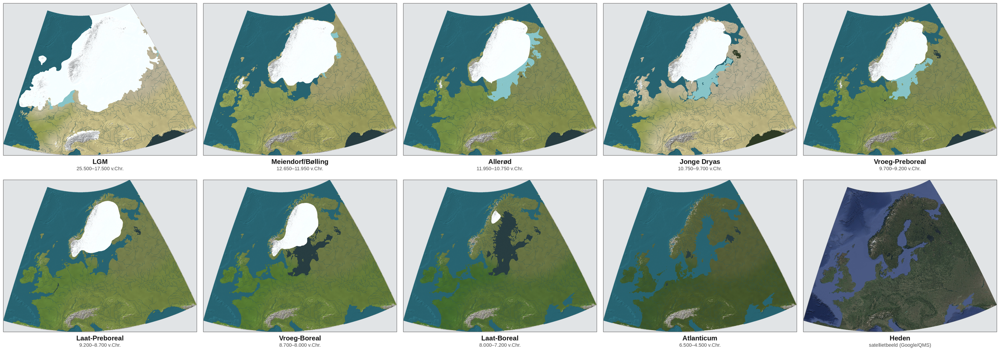

Europe's landscape wasn't carved once — it was reshaped again and again as the ice retreated, flooded, froze back, and finally gave way to the forests and coastlines we know today.

An ice age (or glacial period) is a long stretch of cold climate in which ice sheets expand and grip large parts of the continent — in Europe's case, burying Scandinavia and much of the North Sea basin under kilometres of ice, as seen in the LGM map above. But an ice age isn't uniformly cold throughout. It's punctuated by shorter, warmer swings called interstadials, when the ice front retreats and forests briefly return, before the cold reasserts itself.
The ten periods in this atlas trace exactly that back-and-forth: the depths of the Last Glacial Maximum, the sharp interstadial warming of the Meiendorf/Bølling and Allerød, a sudden relapse into near-glacial cold during the Younger Dryas, and then the definitive shift into the Holocene — the current interglacial, not just another interstadial — as the Preboreal, Boreal, and Atlantic periods unfold.
A brief warm interval within an ice age — centuries to a few thousand years. Forests can expand, but the underlying glacial climate never fully lets go. The Bølling and Allerød are Europe's clearest examples.
A full return to warm, ice-free conditions between ice ages — lasting tens of thousands of years. The Holocene, which began at the end of the Younger Dryas, is the interglacial we're still living in.
Dates shown as years BCE and years Before Present (BP, counted from 1950)
| Period | Years BCE | Years BP | Winter temperature |
|---|---|---|---|
| LGM Free | 25,500–17,500 | ~27,450–19,450 | −30 ± 10°C vs. today — coldest point in the sequence |
| Meiendorf / Bølling | 12,650–11,950 | ~14,600–13,900 | +10°C jump vs. the preceding cold — still far colder than today |
| Allerød | 11,950–10,750 | ~13,900–12,700 | stable, not separately quantified |
| Younger Dryas | 10,750–9,700 | ~12,700–11,650 | −5 to −10°C vs. the preceding Bølling-Allerød |
| Early Preboreal Free | 9,700–9,200 | ~11,650–11,150 | +5 to +10°C jump vs. the Younger Dryas — still cooler than today |
| Late Preboreal | 9,200–8,700 | ~11,150–10,650 | stabilising, not separately quantified |
| Early Boreal | 8,700–8,000 | ~10,650–9,950 | gradual warming continues |
| Late Boreal | 8,000–7,200 | ~9,950–9,150 | +1 to +2°C vs. today — Climate Optimum begins |
| Atlanticum | 6,500–4,500 | ~8,450–6,450 | +1 to +2°C vs. today — Holocene Climate Optimum |
| Present day | — | 0 | reference point |
Two different reference points, on purpose: only LGM (−30±10°C) and Late Boreal/Atlanticum (+1–2°C) are stated relative to today's temperature — those are the figures the literature gives directly. Bølling, Younger Dryas, and Early Preboreal are stated as jumps relative to the preceding period, because that's how the sources quantify them; despite the "+10°C" and "+5–10°C" jumps, the Bølling and Early Preboreal winters were still considerably colder than today. Read the qualifier under each number before comparing rows.
On the numbers: figures are pulled directly from the pollen- and ice-core-based reconstructions behind this atlas (Peyron et al. 1998; Greenland ice cores; Nature 2025 North Sea study). Where a period has no separately quantified winter figure in the literature, the cell says so rather than guessing. BP years are approximate (BCE date + 1950) and rounded for this overview.